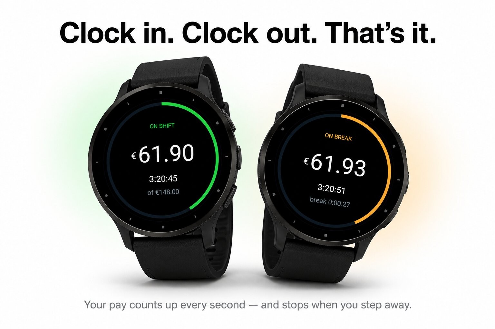
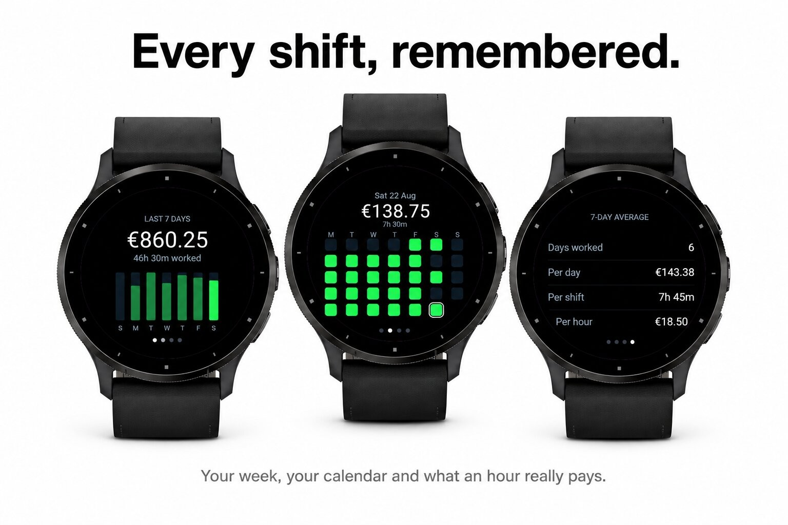
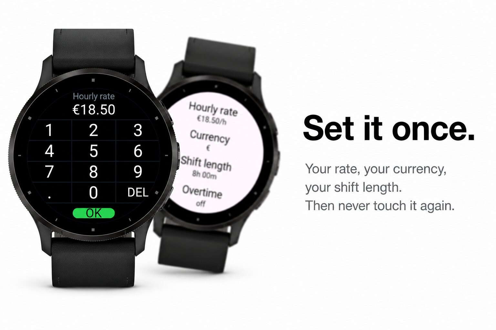
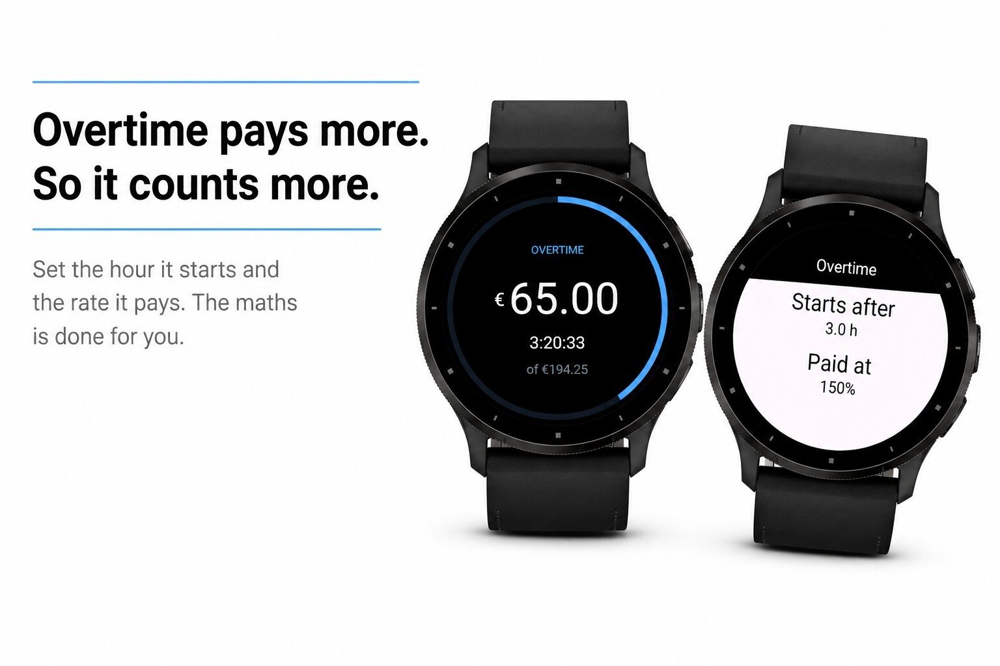

Money & work · Device app
Watch your shift earnings tick up every second.




See exactly what your shift has paid you, updated every second.
Start your shift with one tap and ShiftPay counts your earnings in real time, with a ring around the screen showing how far into the day you are and what the full shift will pay.
Your history, on your wrist:
A glance shows today's total without opening the app.
ShiftPay works from the clock, not from a timer, so your shift keeps running when you close the app or restart your watch.
Everything stays on your watch. No phone, no account, no internet.